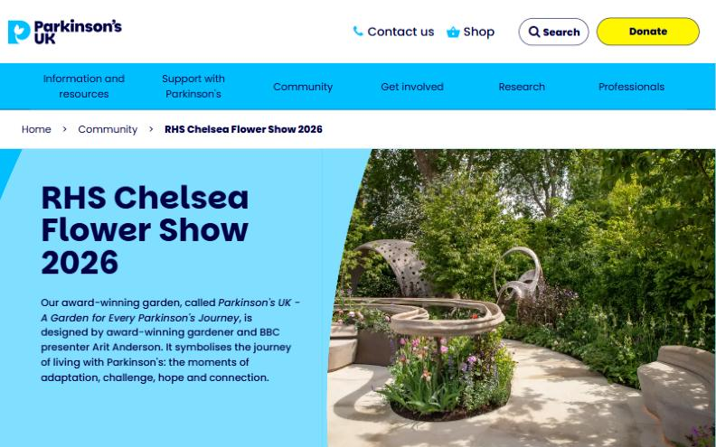
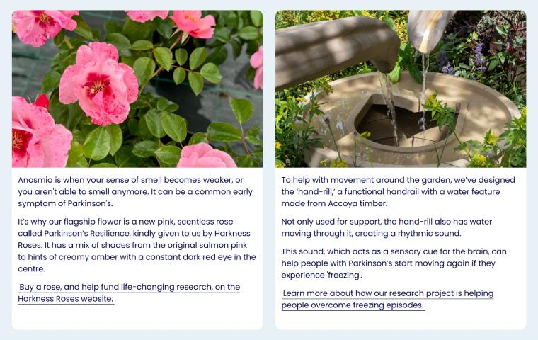

RHS Chelsea Flower Show garden
Content for an award-winning show garden, on the web and in print

FromA show garden on view for one week
ToOne story across multiple webpages and a printed brochure
The problem
Parkinson’s UK was exhibiting at RHS Chelsea Flower Show. Workshops with Arit Anderson and the Parkinson’s UK team brought together gardeners living with Parkinson’s and their loved ones to understand what they wanted and needed from this garden.
They shared their vision of a garden that offers ease of access, interest throughout the day and night, and a place of sanctuary to engage all the senses.
It aimed to be a beautiful environment for both people and wildlife.
It was important for this vision to be reflected across the website and the RHS Chelsea Flower Show brochure that was handed to visitors on site.
My approach
Working with a project manager and other creative team leaders, we came up with a project plan and a set of deliverables. It’s important to note this was an awareness campaign and not a fundraising one, due to strict rules around fundraising while at RHS Chelsea. This set the tone for all of the content required, and underpinned the entire strategy.
Outside of the usual webpages and brochure, we also required messaging for staff to use when speaking to visitors at the garden, alongside some community messaging for the Parkinson’s community.
An additional challenge to this project was the level of oversight needed from executive leadership, including the CEO, as this work had been classed as a Gold level project. It was a complex situation that required speaking to senior leadership and setting expectations, but with the need to be agile and flexible when priorities changed.
The outcome
A main RHS Chelsea Flower Show webpage for our top level content, a garden tour page that explains the design choices around the garden, a plant list page and a printed brochure. All underpinned by a strong messaging framework and the flexibility to adapt content when needed, especially when the garden won the BBC People’s Choice Award during the event.
